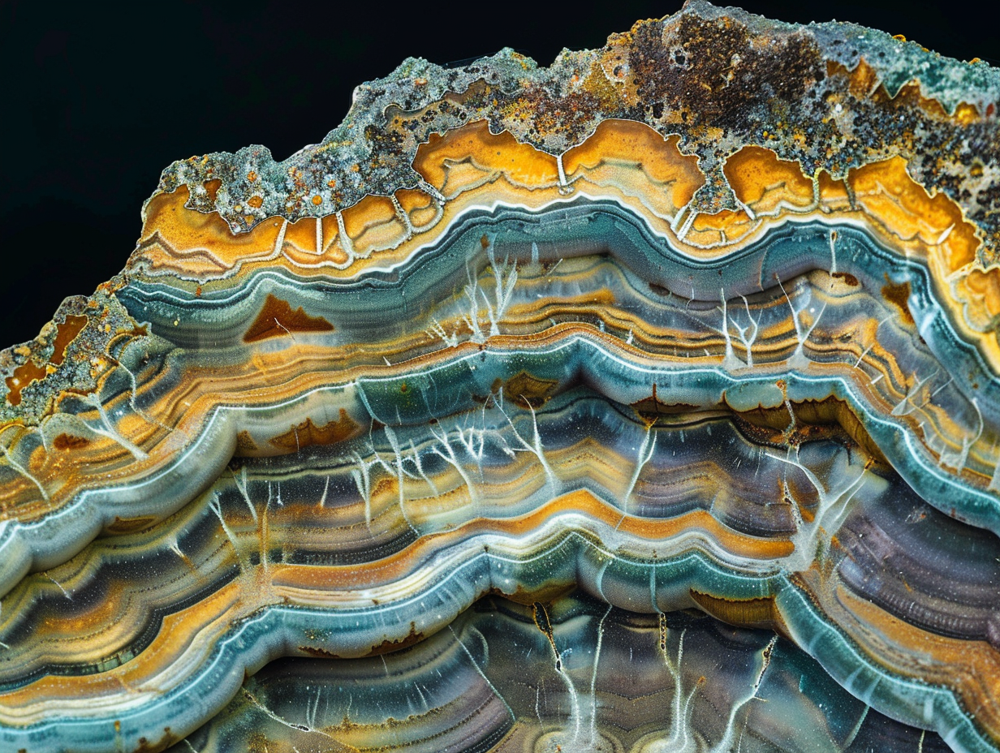

- Les traces de vie éventuelles sont sous la surface : il faut forer, à 1 ou 2 mètres.
- Quatre familles d'indices existent ; la plus fiable est la « latéralité » des acides aminés.
- Aucun indice seul ne suffit : nous proposons la règle du triple verrou.
La surface de Mars détruit activement les molécules organiques, mais son sous-sol pourrait avoir conservé des traces d'une vie passée, voire abriter une vie actuelle. Nous proposons une méthode en deux volets. D'abord, un indice de priorité biosignature (IPB), qui combine six critères pour classer les sites : le nord du bassin d'Hellas (0,86) et le cratère Jezero (0,85) arrivent en tête. Ensuite, une chaîne d'analyse en cinq étapes, qui recherche quatre classes d'indices : molécules à latéralité biologique, signature isotopique du carbone, minéraux d'origine biologique et microstructures. Testée en aveugle sur 48 échantillons de sol martien simulé préparés dans la chambre HADES-2, dont 24 contenant des restes microbiens et 24 leurres abiotiques, la méthode montre qu'un indice isolé produit de 4 à 42 % de fausses alertes, contre aucune lorsque trois classes concordent.
01Où creuser ?
Mars a eu des rivières, des lacs et des sources chaudes. Des molécules organiques ont déjà été repérées dans ses roches. Mais aucune trace de vie n'a été identifiée sans ambiguïté. En surface, le rayonnement ultraviolet et des sels très oxydants, les , détruisent les molécules organiques. Les traces de vie éventuelles se cachent donc en profondeur, en très faibles quantités.
Pour choisir où forer, nous avons défini un (IPB), de 0 à 1. Il combine six critères notés pour chaque site : traces d'eau passée, activité hydrothermale, protection contre les UV, sources d'énergie chimique, richesse géochimique et accessibilité pour un rover.
Un site à partSous la calotte sud, un écho radar a été interprété comme un lac d'eau salée de 20 km, à 1,5 km de profondeur. D'autres explications (argiles, sels hydratés) restent possibles. Nous gardons ce site pour son potentiel, mais son score est incertain.
02Quoi mesurer ?
Une est un indice que seule la vie explique simplement. Nous en retenons quatre classes, de la plus fiable à la moins spécifique.
Les acides aminés existent en deux versions, images l'une de l'autre dans un miroir, comme nos mains : L et D. La vie terrestre n'utilise que la forme L. Dans les météorites, on observe au mieux de faibles excès, sur quelques acides aminés rares. Un fort excès L sur la plupart des acides aminés serait un indice majeur de biologique.
Les enzymes préfèrent le carbone 12, plus léger que le carbone 13. La matière organique d'origine biologique en est appauvrie de 20 à 30 ‰ par rapport au carbone de départ. Sur Mars, le CO₂ de l'air est au contraire riche en carbone 13 (δ¹³C ≈ +45 ‰) : un net appauvrissement se remarquerait.
Certains minéraux naissent surtout grâce aux microbes : carbonates finement feuilletés, petites sphères de pyrite en « », chaînes de cristaux de magnétite.
Des formes de 0,5 à 5 µm, en bâtonnets ou en sphères, faciles à voir au microscope. Mais la chimie minérale peut produire les mêmes formes : c'est un signal d'alerte, pas une preuve.

03Une méthode en entonnoir
Un rover dispose de peu d'énergie, de peu de temps de communication et de peu d'échantillon. Notre chaîne d'analyse fonctionne donc en entonnoir : des mesures rapides et non destructives d'abord, les analyses lourdes seulement pour les meilleurs candidats.
04Le test en aveugle
Une méthode ne vaut que si elle sait dire non. Nous avons préparé 48 échantillons de sol martien simulé (basalte altéré, 0,6 % de perchlorates) dans la chambre HADES-2. Vingt-quatre contenaient des restes de microbes de la campagne MARSLAB-IV, tués puis vieillis par irradiation. Les vingt-quatre autres étaient des leurres : matière organique d'origine chimique, pseudo-fossiles minéraux, carbone appauvri par des réactions non biologiques. Les analystes ignoraient quel échantillon était lequel.
Avec restes microbiens 24
Leurres non biologiques 24
vie détectéevie manquéefausse alerteleurre écartéclasses positives D, C, B, A
| Règle | Vies détectées | Fausses alertes | Principal piège |
|---|---|---|---|
| DMicrostructures | 21 (88 %) | 10 (42 %) | Sphérules minérales |
| CMinéraux | 12 (50 %) | 5 (21 %) | Pyrite formée à chaud |
| BIsotopes | 19 (79 %) | 4 (17 %) | Chimie du CO₂ sous UV |
| AChiralité | 17 (71 %) | 1 (4 %) | Excès faible d'origine chimique |
| Deux classes ou plus | 22 (92 %) | 3 (13 %) | Leurres cumulant D et C |
| Trois classes ou plus | 15 (63 %) | 0 (0 %) | Aucun |
05Quand y croire ?
Aucun indice isolé ne suffit à annoncer une découverte. Nous proposons une échelle de confiance en trois niveaux, calibrée par ce test :
- 1DétectionUn indice, d'une seule classe. Justifie d'autres analyses.42 % de fausses alertes au pire
- 2IndicationDeux classes concordantes sur le même échantillon.13 % de fausses alertes
- 3ConfirmationTrois classes, dont A ou B, puis vérification sur Terre si possible.0 fausse alerte sur 24
Le paradoxe de la contaminationLa campagne MARSLAB-IV a montré que des microbes terrestres comme Ferroacidus ifrasensis ou Deinococcus radiodurans peuvent croître en conditions martiennes simulées. S'ils voyageaient à bord d'un rover, ils produiraient exactement les indices recherchés. Plus nos microbes résistent, plus la stérilisation des engins doit être stricte.
Appliquée aux futures missions, cette méthode oriente vers le nord d'Hellas ou Jezero, un forage à 1–2 m, et une annonce seulement au niveau 3. Les prochaines étapes visent à améliorer la sensibilité de la chiralité sur les échantillons les plus anciens.
- Méthode validée48 échantillons, 0 fausse alerte au niveau 3.
- Test sur 200 échantillonsAvec des restes vieux de millions d'années.
- ARTEMIS-9Chaîne d'analyse embarquée, version prototype.